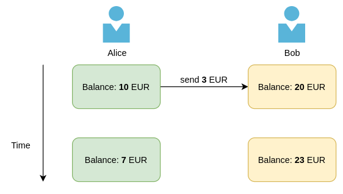
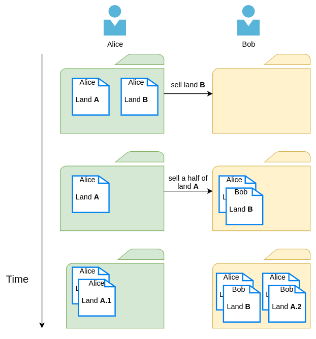

Биткоин транзакция
Андрей Иваницкий
11 июля 2020
Creative Commons Zero 1.0 Universal(Нажмите ? для получения помощи, n и p для следующего и предыдущего слайда соответственно)
1 Криптография
Наука о различных аспектах информационной безопасности, таких как конфиденциальность данных, целостность данных, аутентификация, невозможность отказа от авторства
Традиционно участников криптографических схем и протоколов называют: Алиса, Боб, Кэрол, …
1.1 Цифровая подпись
Математическая схема для проверки подлинности цифрового сообщения или цифрового документа
- Подлинность (человек, подписавший документ, намеренно сделал это)
- Неподдельность (никто не может действовать от имени автора)
- Невозможность отказа (после того, как документ подписан цифровой подписью, человек, подписавший документ, не может сказать, что он не подписывал документ)
1.2 Криптосистема с открытым ключом
Пара ключей
- открытый ключ может быть распространён широко
- секретный ключ известный только владельцу
- Владелец может подписать сообщение с помощью секретного ключа
- Любой человек может проверить подпись используя соответствующий открытый ключ
1.3 Цифровая подпись в криптосистеме с открытым ключом
- Алиса генерирует пару ключей (открытый и секретный)
- Алиса надёжно передаёт свой открытый ключ Бобу (лично)
- Позже Алиса подписывает сообщение с помощью секретного ключа
- Алиса посылает своё сообщение и подпись Бобу по открытому каналу
- Боб, получив это, проверяет подпись, используя открытый ключ Алисы
1.4 Простой пример использования
- Алиса и Боб хотят сделать ставки на исход некого спортивного мероприятия
- Они делают свои ставки и подписывают их
- Они обмениваются своими ставками и подписями
- После мероприятия, если Боб выиграл, Алиса не может отозвать свою ставку
2 Система учёта (гроссбух)
Сводный документ, в котором ведётся учёт транзакций и представляются итоговые данные по бухгалтерским отчётам и счетам
2.1 Учёт на основе счетов
Кто владеет чем (например, банковская система)

2.2 Учёт на основе монет
Что пренадлежит кому (например, система отслеживания алмазов)

2.3 Земельный реестр

2.4 Транзакция
- В системах учёта на основе монет транзакция — это смена владельца монеты
- Транзакции формируют граф владения монет
2.4.1 Как юридический документ
Транзакция Y
Я, Алиса, передаю владение моей землёй A, которую я получила в транзакции X, следующими частями:
- одну половину земли — Бобу
- вторую половину земли я оставляю себе (Алисе)
Подпись Алисы
3 Система учёта биткоина
- Система учёта биткоина ведёт учёт индивидуальных монет (нет аккаунтов)
- Учёт владение монетой ведётся с помощью ассоциированного открытого ключа1
4 Биткоин транзакция
4.1 Как юридический документ
Транзакция Y
Я, Алиса, передаю владение моими 2.7 монетами, которые я получила в первом выходе транзакции X, следующими частями:
- 2.4 монеты Бобу, идентифицируемым открытым ключом Боба
- 0.2 монеты Кэрол, идентифицируемой открытым ключом Кэрол
Я добровольно плачу 0.1 монеты в качестве комиссии за сервис.
Подпись Алисы
4.2 Структура транзакции
- Входы ссылаются на выходы предыдущих транзакций
- первый выход транзакции X
- Выходы указывают количество монет и публичный ключ получателя
- 2.4 публичному ключу Боба
- 0.2 публичному ключу Кэрол
- Подписи аутентифицирует владельцев
- подпись Алисы
- (Неявно) Идентификатор — это хэш транзакции
- (Неявно) Комиссия вычисляется как разница между суммами выходов и входов транзакции
4.3 Граф транзакций

4.4 Что такое адрес?
- Биткоин адрес — это просто (несколько модифицированный) открытый ключ
- Баланс адреса — абстракция кошелька показывающая общее количество монет контролируемых соответствующим открытым ключом
(как и бумажник не имеет баланса, но имеет монеты)
4.5 Проблема двойного расходования
- Если Боб получил транзакцию от Алисы, должен ли он послать товар Алисе?
- Что мешает Алисе создать другую транзакцию с теми же входами, но выходами для Кэрол?
- Биткоин решает проблему двойного расходования и реализует цифровую редкость (ограниченность) без центрального органа власти
5 Резюме
- Система учёта биткоина — это учёт на основе монет
- Биткоин транзакция — смена владельца монеты
- Биткоин транзакции формируют граф владения монет